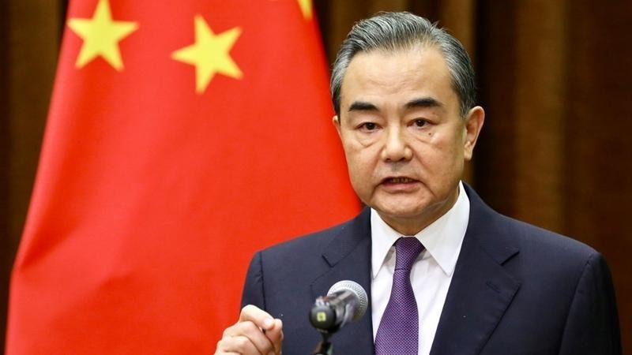
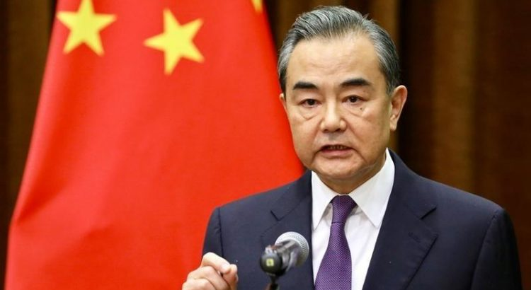
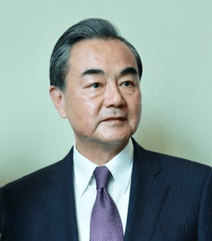

Wang Accuses U.S. of Promoting “New Cold War”

China’s 'two sessions' of the National People’s Congress are taking place in Beijing, and the country’s foreign minister, Wang Yi, accused some US political forces of pushing China-US relations into a 'new cold war.'At a press conference on Sunday, Wang accused the U.S. of 'wasting time,' and of 'wishful thinking.'
'Regretfully, in addition to the raging coronavirus, a political virus is also spreading in the United States.This political virus is using every opportunity to attack and smear China,' said Wang, who is also China’s foreign minister.The Foreign Minister’s Press Conference is a 'fixed program' of the 'two sessions' each year.
In nearly 90 minutes, Wang Yi answered 23 questions from Chinese and international media, many of which focused on China-US relations.On the issue of Hong Kong, Wang once again criticized external forces for 'intervention' in Hong Kong affairs.
At the same time as the press conference, Hong Kong is erupting the largest protest since the start of the new coronavirus epidemic.Thousands of people took to the streets to protest Beijing’s sudden announcement of Hong Kong’s 'National Security Law' legislative plan.
Accuses the US of 'Political Viruses'
At the press conference held via online video due to the New Coronavirus epidemic, the China-US relationship was undoubtedly the most concerned by the outside world.In many of his answers, Wang launched a fierce attack on the United States.
When asked about the polls that showed that the American people’s favorability with China has reached a new low, China and the United States may accelerate their decoupling, and how China will face it, Wang responded in kind.
'Some politicians have ignored the most basic facts and concocted too many lies about China and plotted too many conspiracies,' he said.'I want to say here: Don’t waste precious time any longer, and don’t ignore lives,' Wang added.
The trade war is not over, and the new coronavirus epidemic has accelerated the deterioration of relations between the United States and China.As of April of this year, there have been at least seven lawsuits in the US for the epidemic, including the Missouri state government.These lawsuits allege that China is suspected of taking intentional actions or neglecting their duties, leading to the spread of the new coronavirus epidemic.
Wang Yi responded at the press conference that these lawsuits 'have no factual basis, no legal basis, and no international precedent,' and said that China is also a 'victim' of the pandemic.In another question, he further accused some American political forces of 'abducting China-US relations' during the pandemic, trying to push China-US relations to a 'new cold war.'He stated that this will bury the achievements of China-US cooperation for many years.
'China has no intention to change the United States, and the United States cannot change China wishfully,' he said.Every year, in addition to the press conference of the premier, the 'two sessions' of China includes the foreign ministers’ press conferences.
This year, the Chinese authorities reduced the duration of the meeting due to the epidemic situation, and a considerable number of meeting schedules have been reduced.Only four press conferences have been retained.The Foreign Minister’s press conference is one of them.
However, the press conference has undergone great changes in form.The press conference held at the Media Center in Beijing in previous years was conducted through online videoconferencing this year, just like a 'cloud press conference.'The reporters are still in the huge auditorium of the news center, but they face three huge screens.At the other end of the screen; there are the Ministry of Foreign Affairs officials in the Great Hall of the People.
But even if the reporters just go to the news center, they must do nucleic acid detection in the morning.Only after waiting for a few hours for the results to come out, and then go to the venue.Despite spending a lot of time, the response was quite satisfactory.All questions are arranged in advance, and cover issues like the United States, Russia, the European Union, Africa, Japan, South Korea, and ASEAN countries.
[bsa_pro_ad_space id=4]
Share on Facebook Tweet Follow us
The heightened growth of blockchain has prompted development in the Blockchain in Media and Entertainment Market 2020.A 32.94% CAGR is expected, earning of income worth $1.54 billion in the forecast period.
The ability to ensure elimination of fraud is estimated to push the development of the Covid-19 Analysis on Blockchain in Media and Entertainment Market.The need to automate transactions in the media and entertainment industry is expected to drive the market share of the Covid-19 Analysis on Blockchain in Media and Entertainment Market in the forecast period.
Key Players
The noteworthy contenders in the Blockchain in Media and Entertainment Market are Microsoft Corporation, IBM Corporation, SAP SE, Auxesis Group, Accenture PLC, Oracle Corporation, Infosys Limited, Bitfury USA Inc., Amazon Web Services, BTL Group, Factom Inc., GuardTime, AS, Nyiax Inc., MetaX, Voise, and ClearCoin.
Request Free Sample
Segmented Analysis
The segmented review of Blockchain in Media and Entertainment Market is conducted on the basis of type, platform, application, organization size, and region.By types, the Blockchain in Media and Entertainment Market has been segmented into public, consortium, and private.On the basis of platform, the Blockchain in Media and Entertainment Market has been segmented into Hyperledger, Ripple, Bitcoin, MultiChain, R3 Corda, Ethereum, and others.
The application basis of segmenting the Blockchain in Media and Entertainment Market comprises of license rights management, royalty distribution, content security, smart contracts, digital advertising, payments, online gaming, and others.On the basis of organization sizes, the Blockchain in Media and Entertainment Market has been divided into large enterprises and SMEs.Based on the regions, the Blockchain in Media and Entertainment Market is segmented into North America, Europe, North America, and other regional markets.
Detailed Regional Analysis
The regional insight into the
Blockchain in Media and Entertainment Market
includes regions such as North America, Europe, North America, and other regional markets.The North American regional market holds the leading market portion due to the increasing adoption of Blockchain in media and entertainment in enterprises for ensuring improved employee engagement and workforce teamwork.In the North American countries studied, the US is responsible for the prime market segment due to the increasing application of partnership tools within big enterprises as well as SMEs in the advertising sector.
The European region was responsible for the next biggest market segment due to the increasing implementation of Blockchain in media and entertainment solutions in the region’s countries.The Middle East, Africa, and South American region are projected to achieve a considerable market development with important players concentrated on capitalizing in this region to present Blockchain in media and entertainment services to medium-sized and small enterprises.
Competitive Analysis
Market players are expected to contribute in a significant way to the progress of the market by investing capital and fortifying their assets along with their competencies, in the market to match the pulse of the market.Intensive attention focused on research and development activities is projected to open up new areas for the development of the market in the forecast period.
The market is on a hot streak of expansion in the forecast period.Robust marketing activities undertaken by the contenders in the market are inspiring the next steps for market development in the forecast period.Improved backing by government and trade bodies are creating a favorable pace of growth in the market.Control of overhead costs is projected to motivate the market considerably in the forecast period.Customer inclinations are projected to define the growth of the global market more than ever in the coming years.
About Market Research Future
At Market Research Future (MRFR), we enable our customers to unravel the complexity of various industries through our Cooked Research Report (CRR), Half-Cooked Research Reports (HCRR), Raw Research Reports (3R), Continuous-Feed Research (CFR), and Market Research Consulting Services.
[bsa_pro_ad_space ID = 4]
Share on Facebook Tweet Follow us
Posted On: 2020-05-24T00:00:00
Posted By: Doris Mkwaya





Content Date: 2020-05-24
Download Date: 2021-07-09
Document ID: L0C04E5QH